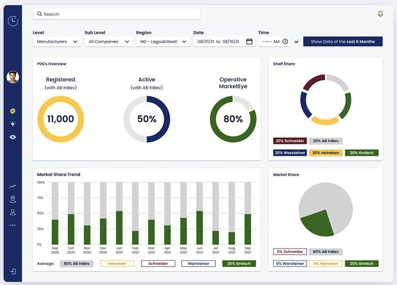
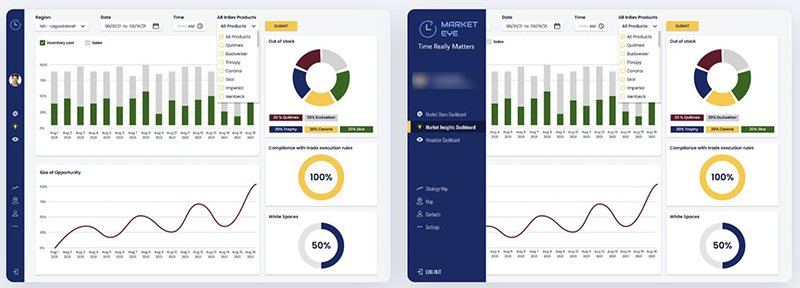
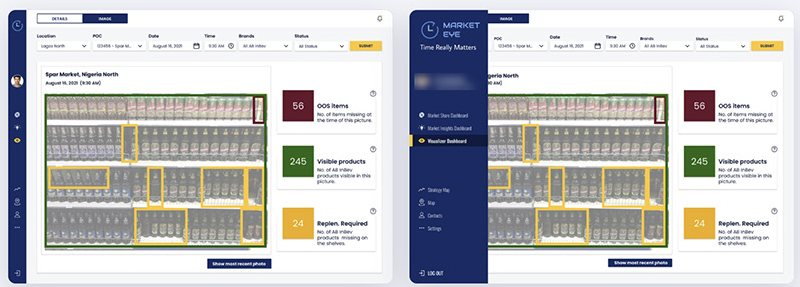

05Data dashboard · Retail AIDashboard de datos · IA para retail · 2021
Market Eye, AB InBevMarket Eye, AB InBev
Turning in-store refrigerator camera data into actionable retail insights for AB InBev's commercial teams.
Convertir los datos de cámaras en heladeras de puntos de venta en insights accionables para los equipos comerciales de AB InBev.

Overview
Resumen
Cameras inside refrigerators at points of sale capture an image every 30 minutes, and AI analyzes it to identify product availability, out-of-stock items, competitor presence, shelf share and shelf conditions. I designed the web experience that lets AB InBev's commercial teams move from high-level market performance to specific opportunities and, ultimately, to the visual evidence behind the data.
Cámaras dentro de las heladeras de los puntos de venta capturan una imagen cada 30 minutos y una IA la analiza para detectar disponibilidad, faltantes, presencia de la competencia, participación en góndola y estado de la heladera. Diseñé la experiencia web que permite a los equipos comerciales de AB InBev ir del rendimiento general del mercado a oportunidades concretas y, finalmente, a la evidencia visual detrás de los datos.
The challenge
El desafío
The platform handled a large amount of information from physical points of sale. Users needed to understand what was happening across the network, where the opportunities were, and what was actually happening inside a single refrigerator, without being overwhelmed by data.
La plataforma manejaba muchísima información de puntos de venta físicos. Los usuarios necesitaban entender qué pasaba en toda la red, dónde estaban las oportunidades y qué ocurría realmente dentro de una heladera, sin abrumarse con datos.
Three levels of analysis
Tres niveles de análisis
- Market performanceRendimiento del mercado
- Commercial insightsInsights comerciales
- Point-of-sale evidenceEvidencia en el punto de venta
Key discovery insights
Insights del discovery
Data needed hierarchy
Los datos necesitaban jerarquía
Several data sources had to be disclosed progressively, not packed into one dense dashboard.
Varias fuentes de datos tenían que mostrarse de forma progresiva, no en un único dashboard denso.
AI outputs needed context
La IA necesitaba contexto
A detection is easier to interpret when users see where it occurred in the refrigerator.
Una detección se entiende mejor cuando se ve en qué parte de la heladera ocurrió.
Analysis happens at different levels
El análisis ocurre en niveles
Users needed a path from market-level performance to individual point-of-sale investigation.
Hacía falta un camino del rendimiento del mercado a la investigación de un punto de venta.
Constraints shaped the experience
Las restricciones dieron forma
The interaction model balanced user needs, available data and system capabilities with stakeholders and engineering.
El modelo de interacción equilibró necesidades, datos disponibles y capacidades del sistema junto a stakeholders y desarrollo.
Market Share dashboard
Dashboard de Market Share

- Problem
- Problema
- Users needed to understand the overall state of the network without navigating separate reports.Los usuarios necesitaban entender el estado general de la red sin recorrer reportes separados.
- Decision
- Decisión
- A high-level dashboard combining coverage KPIs, shelf share, market share, competitor comparison and historical trends.Un dashboard general que combina KPIs de cobertura, participación en góndola y en el mercado, comparación con competidores y tendencias.
- Why
- Por qué
- An immediate overview of network performance that helps spot changes worth investigating.Una vista inmediata del rendimiento de la red para detectar cambios que vale la pena investigar.
Market Insights
Market Insights

- Problem
- Problema
- After the overview, users needed a detailed view to find performance gaps and opportunities.Después de la vista general, hacía falta una vista detallada para encontrar brechas y oportunidades.
- Decision
- Decisión
- Related metrics brought together in one analytical view, with filtering to explore different levels.Métricas relacionadas reunidas en una vista analítica, con filtros para explorar distintos niveles.
- Why
- Por qué
- It connects a broad market signal to a specific area of investigation.Conecta una señal general del mercado con un área concreta de investigación.
Visualizer
Visualizer

- Problem
- Problema
- Showing AI detections separately from the original image made them hard to interpret.Mostrar las detecciones de la IA separadas de la imagen original las hacía difíciles de interpretar.
- Decision
- Decisión
- AI detections drawn directly on the refrigerator image, paired with a summary of detected products and their status.Las detecciones dibujadas sobre la imagen de la heladera, con un resumen de los productos detectados y su estado.
- Why
- Por qué
- Linking each detection to its place on the shelf gives immediate context.Ubicar cada detección en la góndola da contexto inmediato.
Navigation & filters
Navegación y filtros
A collapsible navigation and a consistent filter structure across dashboards (level, sub-level, region, date and time, with a shortcut to the last six months). Competitors keep the same color in every chart, so users don't re-learn each visualization.
Una navegación colapsable y una estructura de filtros consistente en todos los dashboards (nivel, subnivel, región, fecha y hora, con un atajo a los últimos seis meses). Cada competidor mantiene el mismo color en todos los gráficos, así no hay que reaprender cada visualización.
“How are we performing?” “Where is the opportunity?” “What is actually happening inside this refrigerator?”
“¿Cómo nos está yendo?” “¿Dónde está la oportunidad?” “¿Qué pasa realmente dentro de esta heladera?”
Outcome
Resultado
The platform launched, is live and became the tool AB InBev's commercial teams use to follow market share, find opportunities and check what is happening at each point of sale.
La plataforma se lanzó, está en uso y se convirtió en la herramienta que usan los equipos comerciales de AB InBev para seguir la participación de mercado, encontrar oportunidades y ver qué pasa en cada punto de venta.